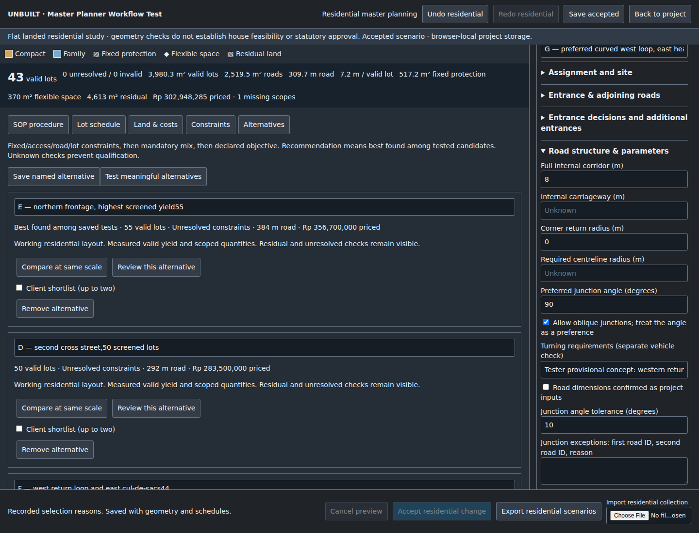
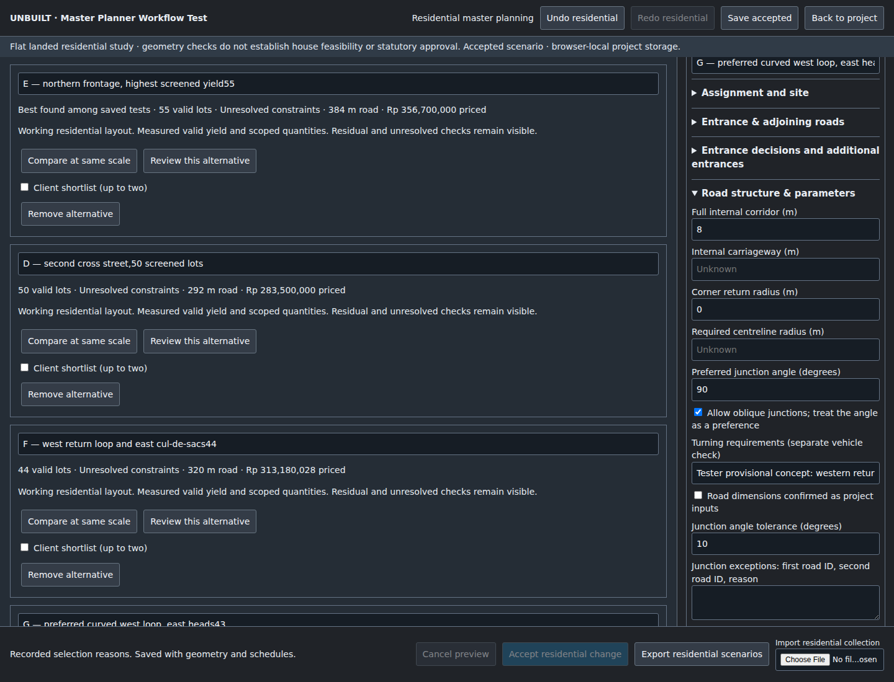
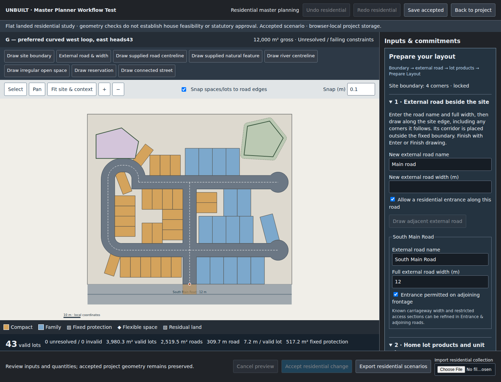
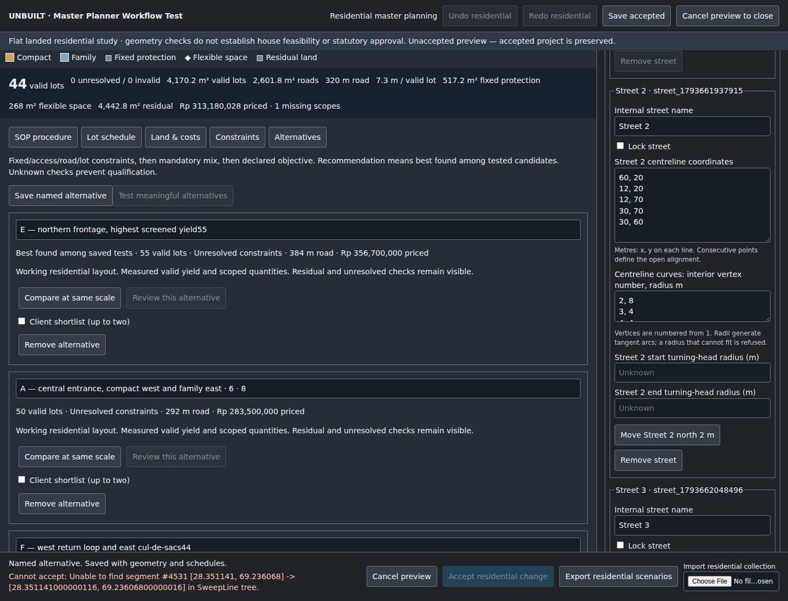
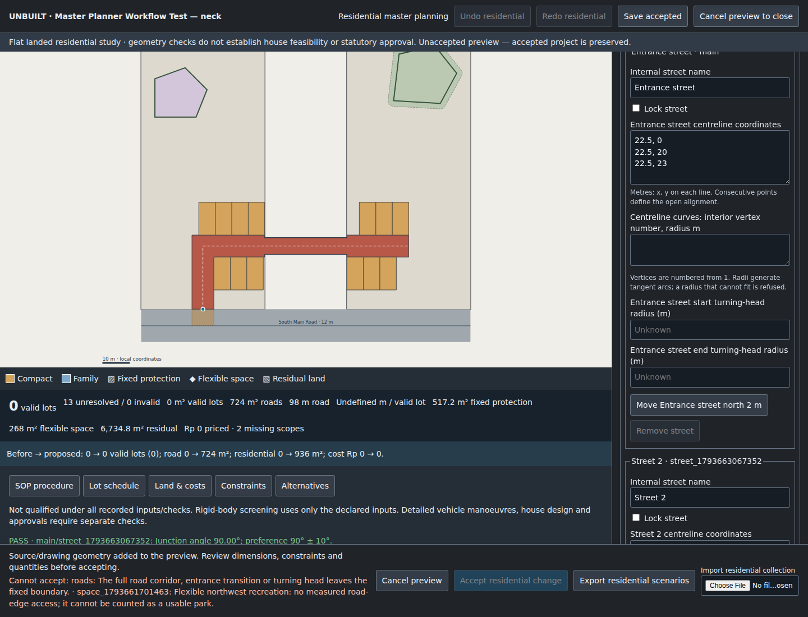

Master Planner Workflow Test — screenshot evidence
Stable visible-UI replays of the original edit operations. All screenshots show fictitious geometry. Open each image for full resolution. Full report
Entrance movement:31→28 valid lots
Road movement:oblique free endpoint;28 lots
Whole group change:28→32;mandatory mix blocks acceptance
Flexible-space vertex:268→272m²;lots unchanged
Conditional preferred43 versus screened capacity55

Conditional preferred43 versus capacity50

Portable project imported in fresh profile

Preserved accepted plan after numerical curve failure

Full corridor refused through narrow neck
